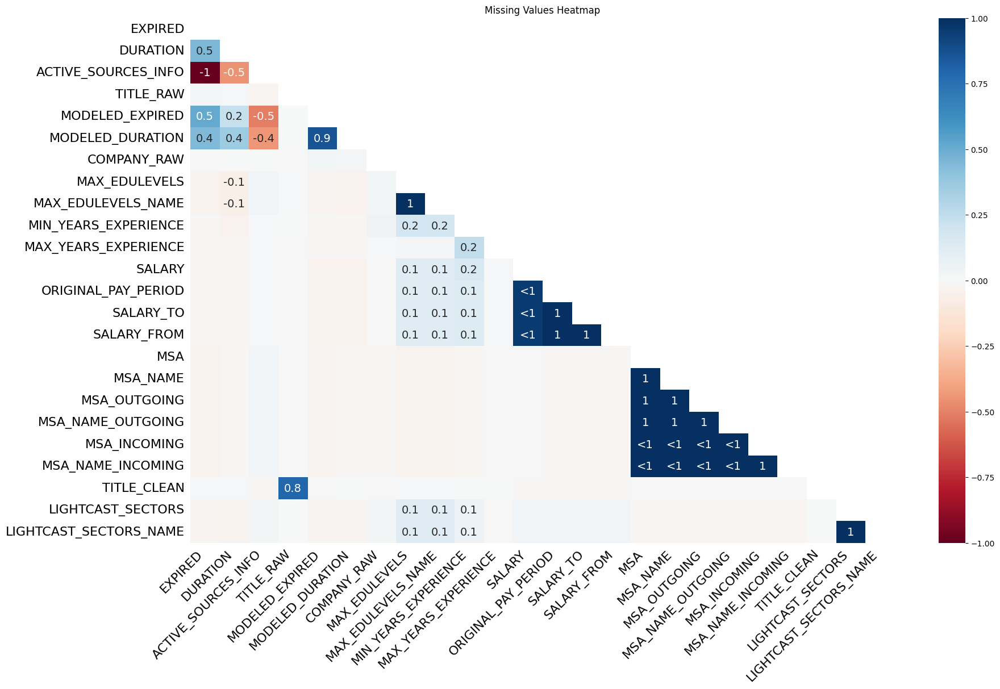

import pandas as pd
import matplotlib.pyplot as plt
import plotly.express as px
df = pd.read_csv("lightcast_job_postings.csv")
print("Available columns in dataset:", df.columns.tolist())
columns_to_drop = [
"ID", "URL", "ACTIVE_URLS", "DUPLICATES", "LAST_UPDATED_TIMESTAMP",
"NAICS2", "NAICS3", "NAICS4", "NAICS5", "NAICS6",
"SOC_2", "SOC_3", "SOC_5"
]
df.drop(columns=columns_to_drop, inplace=True)
print("Dropped unnecessary columns.")
print(df.columns)
# handle missing value
print("Missing values before cleaning:")
print(df.isnull().sum())
import missingno as msno
import matplotlib.pyplot as plt
# Check column names
df.columns = df.columns.str.upper().str.strip() # Normalize column names
print(df.columns) # Debugging step
# Visualize missing data
msno.heatmap(df)
plt.title("Missing Values Heatmap")
plt.show()
# Drop columns with >50% missing values
df.dropna(thresh=len(df) * 0.5, axis=1, inplace=True)
# Check if "SALARY" exists before filling missing values
if "SALARY" in df.columns:
df["SALARY"].fillna(df["SALARY"].median(), inplace=True)
else:
print("⚠️ Warning: 'SALARY' column not found in dataframe!")
# Check if "INDUSTRY" exists before filling missing values
if "INDUSTRY" in df.columns:
df["INDUSTRY"].fillna("Unknown", inplace=True)
else:
print("⚠️ Warning: 'INDUSTRY' column not found in dataframe!")
print("✅ Missing value handling complete.")
# delete duplicates
df = df.drop_duplicates(subset=["TITLE", "COMPANY", "LOCATION", "POSTED"])
print("Duplicates removed.")Available columns in dataset: ['ID', 'LAST_UPDATED_DATE', 'LAST_UPDATED_TIMESTAMP', 'DUPLICATES', 'POSTED', 'EXPIRED', 'DURATION', 'SOURCE_TYPES', 'SOURCES', 'URL', 'ACTIVE_URLS', 'ACTIVE_SOURCES_INFO', 'TITLE_RAW', 'BODY', 'MODELED_EXPIRED', 'MODELED_DURATION', 'COMPANY', 'COMPANY_NAME', 'COMPANY_RAW', 'COMPANY_IS_STAFFING', 'EDUCATION_LEVELS', 'EDUCATION_LEVELS_NAME', 'MIN_EDULEVELS', 'MIN_EDULEVELS_NAME', 'MAX_EDULEVELS', 'MAX_EDULEVELS_NAME', 'EMPLOYMENT_TYPE', 'EMPLOYMENT_TYPE_NAME', 'MIN_YEARS_EXPERIENCE', 'MAX_YEARS_EXPERIENCE', 'IS_INTERNSHIP', 'SALARY', 'REMOTE_TYPE', 'REMOTE_TYPE_NAME', 'ORIGINAL_PAY_PERIOD', 'SALARY_TO', 'SALARY_FROM', 'LOCATION', 'CITY', 'CITY_NAME', 'COUNTY', 'COUNTY_NAME', 'MSA', 'MSA_NAME', 'STATE', 'STATE_NAME', 'COUNTY_OUTGOING', 'COUNTY_NAME_OUTGOING', 'COUNTY_INCOMING', 'COUNTY_NAME_INCOMING', 'MSA_OUTGOING', 'MSA_NAME_OUTGOING', 'MSA_INCOMING', 'MSA_NAME_INCOMING', 'NAICS2', 'NAICS2_NAME', 'NAICS3', 'NAICS3_NAME', 'NAICS4', 'NAICS4_NAME', 'NAICS5', 'NAICS5_NAME', 'NAICS6', 'NAICS6_NAME', 'TITLE', 'TITLE_NAME', 'TITLE_CLEAN', 'SKILLS', 'SKILLS_NAME', 'SPECIALIZED_SKILLS', 'SPECIALIZED_SKILLS_NAME', 'CERTIFICATIONS', 'CERTIFICATIONS_NAME', 'COMMON_SKILLS', 'COMMON_SKILLS_NAME', 'SOFTWARE_SKILLS', 'SOFTWARE_SKILLS_NAME', 'ONET', 'ONET_NAME', 'ONET_2019', 'ONET_2019_NAME', 'CIP6', 'CIP6_NAME', 'CIP4', 'CIP4_NAME', 'CIP2', 'CIP2_NAME', 'SOC_2021_2', 'SOC_2021_2_NAME', 'SOC_2021_3', 'SOC_2021_3_NAME', 'SOC_2021_4', 'SOC_2021_4_NAME', 'SOC_2021_5', 'SOC_2021_5_NAME', 'LOT_CAREER_AREA', 'LOT_CAREER_AREA_NAME', 'LOT_OCCUPATION', 'LOT_OCCUPATION_NAME', 'LOT_SPECIALIZED_OCCUPATION', 'LOT_SPECIALIZED_OCCUPATION_NAME', 'LOT_OCCUPATION_GROUP', 'LOT_OCCUPATION_GROUP_NAME', 'LOT_V6_SPECIALIZED_OCCUPATION', 'LOT_V6_SPECIALIZED_OCCUPATION_NAME', 'LOT_V6_OCCUPATION', 'LOT_V6_OCCUPATION_NAME', 'LOT_V6_OCCUPATION_GROUP', 'LOT_V6_OCCUPATION_GROUP_NAME', 'LOT_V6_CAREER_AREA', 'LOT_V6_CAREER_AREA_NAME', 'SOC_2', 'SOC_2_NAME', 'SOC_3', 'SOC_3_NAME', 'SOC_4', 'SOC_4_NAME', 'SOC_5', 'SOC_5_NAME', 'LIGHTCAST_SECTORS', 'LIGHTCAST_SECTORS_NAME', 'NAICS_2022_2', 'NAICS_2022_2_NAME', 'NAICS_2022_3', 'NAICS_2022_3_NAME', 'NAICS_2022_4', 'NAICS_2022_4_NAME', 'NAICS_2022_5', 'NAICS_2022_5_NAME', 'NAICS_2022_6', 'NAICS_2022_6_NAME']
Dropped unnecessary columns.
Index(['LAST_UPDATED_DATE', 'POSTED', 'EXPIRED', 'DURATION', 'SOURCE_TYPES',
'SOURCES', 'ACTIVE_SOURCES_INFO', 'TITLE_RAW', 'BODY',
'MODELED_EXPIRED',
...
'NAICS_2022_2', 'NAICS_2022_2_NAME', 'NAICS_2022_3',
'NAICS_2022_3_NAME', 'NAICS_2022_4', 'NAICS_2022_4_NAME',
'NAICS_2022_5', 'NAICS_2022_5_NAME', 'NAICS_2022_6',
'NAICS_2022_6_NAME'],
dtype='object', length=118)
Missing values before cleaning:
LAST_UPDATED_DATE 0
POSTED 0
EXPIRED 7822
DURATION 27294
SOURCE_TYPES 0
...
NAICS_2022_4_NAME 0
NAICS_2022_5 0
NAICS_2022_5_NAME 0
NAICS_2022_6 0
NAICS_2022_6_NAME 0
Length: 118, dtype: int64
Index(['LAST_UPDATED_DATE', 'POSTED', 'EXPIRED', 'DURATION', 'SOURCE_TYPES',
'SOURCES', 'ACTIVE_SOURCES_INFO', 'TITLE_RAW', 'BODY',
'MODELED_EXPIRED',
...
'NAICS_2022_2', 'NAICS_2022_2_NAME', 'NAICS_2022_3',
'NAICS_2022_3_NAME', 'NAICS_2022_4', 'NAICS_2022_4_NAME',
'NAICS_2022_5', 'NAICS_2022_5_NAME', 'NAICS_2022_6',
'NAICS_2022_6_NAME'],
dtype='object', length=118)
⚠️ Warning: 'SALARY' column not found in dataframe!
⚠️ Warning: 'INDUSTRY' column not found in dataframe!
✅ Missing value handling complete.
Duplicates removed.